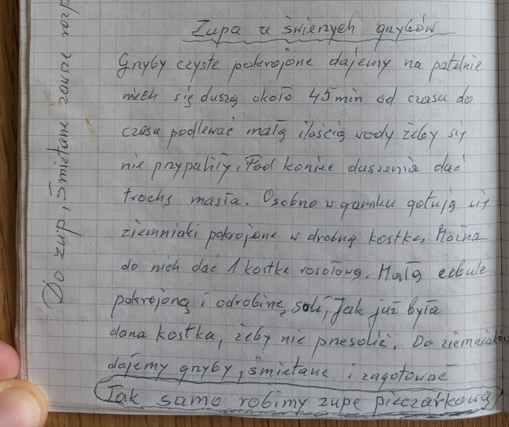
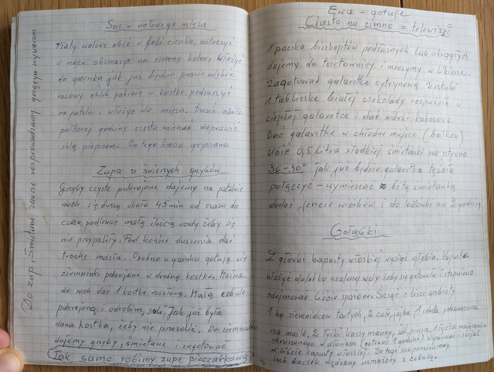

Zupa ze świeżych grzybów


Składniki
- świeże grzyby
- masło
- ziemniaki
- 1 kostka rosołowa
- mała cebula
- sól
- śmietana
Przygotowanie
- Czyste, pokrojone grzyby dusić na patelni około 45 minut, podlewając małą ilością wody, żeby się nie przypaliły.
- Pod koniec duszenia dodać trochę masła.
- Osobno ugotować ziemniaki pokrojone w drobną kostkę z kostką rosołową, małą pokrojoną cebulą i odrobiną soli (uwaga, żeby nie przesolić).
- Do ziemniaków dodać grzyby i śmietanę rozprowadzoną gorącym wywarem, zagotować.
Oryginalny zapis
Zupa ze świeżych grzybów Grzyby czyste pokrojone dajemy na patelnię niech się duszą około 45 min od czasu do czasu podlewać małą ilością wody żeby się nie przypaliły. Pod koniec duszenia dać trochę masła. Osobno w garnku gotują się ziemniaki pokrojone w drobną kostkę. Można do nich dać 1 kostkę rosołową. Małą cebulę pokrojoną i odrobinę soli. Jak już była dana kostka, żeby nie przesolić. Do ziemniaków dajemy grzyby, śmietanę i zagotować (Tak samo robimy zupę pieczarkową) [dopisek pionowo na marginesie strony:] Do zup, śmietanę zawsze rozprowadzamy gorącym wywarem